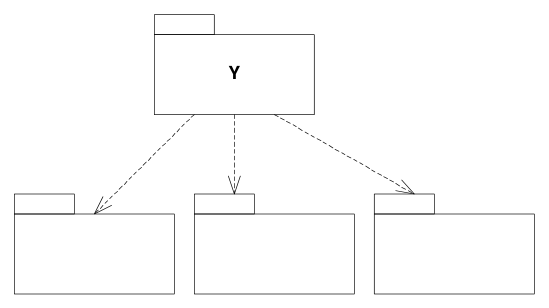

Y bất ổn.
Ce — Efferent Coupling. Số lượng class bên ngoài package mà các class bên trong package phụ thuộc vào. (tức là phụ thuộc đi ra)
I — Instability. I = Ce / (Ca + Ce) Đây là chỉ số có miền giá trị: [0,1].
Nếu không có phụ thuộc đi ra, thì I sẽ bằng không và package ổn định. Nếu không có phụ thuộc đi vào thì I sẽ bằng một và package bất ổn.
Bây giờ ta có thể diễn đạt lại SDP như sau: “Phụ thuộc vào các package có chỉ số I thấp hơn của bạn.”
Lý do. Có phải mọi phần mềm đều nên ổn định? Một trong những thuộc tính quan trọng nhất của phần mềm được thiết kế tốt là dễ thay đổi. Phần mềm linh hoạt trước các yêu cầu thay đổi được đánh giá cao. Tuy nhiên, phần mềm đó bất ổn theo định nghĩa của chúng ta. Thực tế, chúng ta rất mong muốn một phần phần mềm bất ổn. Chúng ta muốn một số module dễ thay đổi để khi yêu cầu dịch chuyển, thiết kế có thể đáp ứng dễ dàng.
Hình 2-27 cho thấy cách SDP có thể bị vi phạm. Flexible là package mà ta dự định dễ thay đổi. Ta muốn Flexible bất ổn. Tuy nhiên, một kỹ sư đang làm việc trong package tên Stable đã tạo phụ thuộc vào Flexible. Điều này vi phạm SDP vì chỉ số I của Stable thấp hơn nhiều so với chỉ số I của Flexible. Kết quả là Flexible sẽ không còn dễ thay đổi. Một thay đổi ở Flexible sẽ buộc ta phải xử lý Stable và tất cả các package phụ thuộc của nó.
Nguyên tắc Trừu tượng Ổn định (SAP)1
Các package ổn định nên là các package trừu tượng.